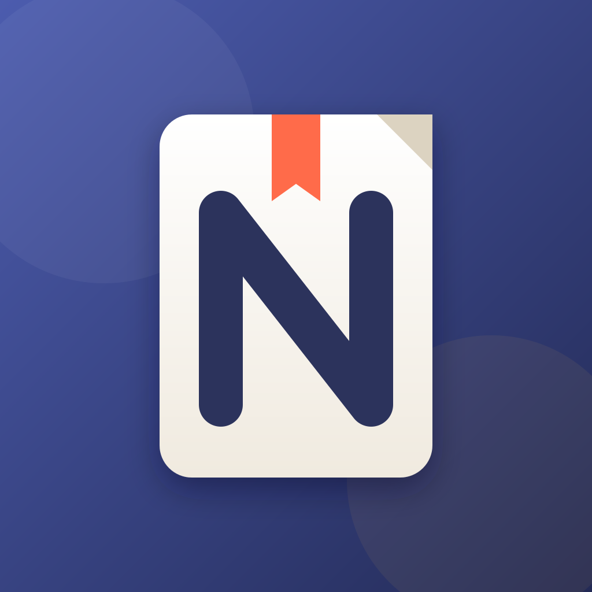

4 个方向，均为 1024×1024 全出血方形稿（上方展示的是 iOS 圆角遮罩效果）。浅色/深色/着色变体可在 Icon Composer 中基于同一分层稿生成。
三张错落卡片 + 珊瑚色书签。表达“资料归档”，阅读距离最远也能一眼认出是文档类 App。
文件夹 + 露出的纸页 + 标签圆点。直接对应“真实文件夹 + 标签”的产品模型，语义最准确。
打开的书 + 铅笔。突出“教学资料 + 标注编辑”，适合强调 PDF 批注卖点。

书页 + 品牌首字母 N。品牌感最强，但语义需要配合 App 名称理解，适合作为长期品牌标识。
1024×1024，PNG，不能有透明通道；不要自己切圆角，系统会自动裁。assets/appstore/icons/*.svg，可直接拖进 Figma / Sketch / Icon Composer。assets/appstore/exports/（1024×1024）。